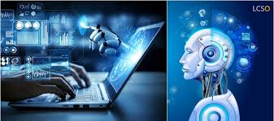
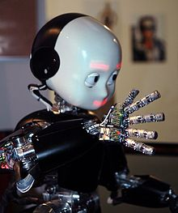

COMPUTER SYSTEMS OF INTEREST TO CLINICAL ENGINEERS
Published on: February 19, 2025
Today, computer technology is involved in almost every facet of human activity, yet this technology is still considered to be in its infancy. This observation is especially true for the use of computer technologies in the clinical environment. Computers have essentially revolutionized the practice of medicine by:
•
Providing completely new insights into the anatomy and physiology of the human organism through computerized imaging techniques.
•
Facilitating patient surveillance and the delivery of controlled medication in intensive-care units.
•
Assisting health professionals in various aspects of clinical decision making using advances in artificial intelligence technology.
•
Optimizing the collection, retrieval and display of a wide range of patient-related information through automation of the clinical laboratories and development of hospital information systems (Jenkins, 1978; Bronzino, 1982; Anbar, 1987; Shortliffe et al., 1990)....
Read More
Development of computer science

Published on: February 18, 2025
Computer science emerged as an independent discipline in the early 1960s, although the electronic digital computer that is the object of its study was invented some two decades earlier. The roots of computer science lie primarily in the related fields of mathematics, electrical engineering, physics, and management information systems.
Mathematics is the source of two key concepts in the development of the computer—the idea that all information can be represented as sequences of zeros and ones and the abstract notion of a “stored program.” In the binary number system, numbers are represented by a sequence of the binary digits 0 and 1 in the same way that numbers in the familiar decimal system are represented using the digits 0 through 9. The relative ease with which two states (e.g., high and low voltage) can be realized in electrical and electronic devices led naturally to the binary digit, or bit, becoming the basic unit of data storage and transmission in a computer system.
Read More
ROBOT

Published on: February 18, 2025
There is no consensus on which machines qualify as robots but there is general agreement among experts, and the public, that robots tend to possess some or all of the following abilities and functions: accept electronic programming, process data or physical perceptions electronically, operate autonomously to some degree, move around, operate physical parts of itself or physical processes, sense and manipulate their environment, and exhibit intelligent behavior, especially behavior which mimics humans or other animals.[11][12]
The word robot can refer to both physical robots and virtual software agents, but the latter are usually referred to as bots.[13] Related to the concept of a robot is the field of synthetic biology, which studies entities whose nature is more comparable to living things than to machines.
Simpler automated machines are called automatons, like animatronics, often made to resemble humans or animals. Humanoid robots that resemble humans esthetically, possibly even organically, are called androids, while android can be shortened to droid, referring to robots with a broader likeness. On the other hand a human that is augmented with artificial machines is called a cyborg, which is a particular type of transhuman.
Read More